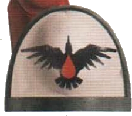

Blood Ravens
| Blood Ravens | |
|---|---|
 Heraldry of the Blood Ravens | |
| Founding | Unknown; believed early (the "Un-Founding") |
| Progenitor | Unknown |
| Homeworld | Formerly Aurelia; now fleet-based, recruiting in the Aurelia Sub-sector |
| Fortress-monastery | Formerly Selenon; now the battle barge Omnis Arcanum |
| Chapter Master | Azariah Vidya ("the Great Father", date unrecorded); Azariah Kyras (late M41, traitor, slain); Gabriel Angelos (late M41 – present) |
| Allegiance | Imperium of Mankind |
| Colours | Dark red, black and cream |
| Battle cry | "Knowledge is power, guard it well."; "None shall find us wanting." |
| Notable battles | |
| Black Fortress of Vespa (c. 500.M41), Cyrene, Tartarus, Kronus, Kaurava, the three Aurelian Crusades, Acheron (all late M41), Thirteenth Black Crusade (c. 999.M41) | |
The Blood Ravens are a Space Marine Chapter of the Adeptus Astartes whose Founding and gene-seed line are unknown even to themselves. The gaps in the Imperial record about them are so complete that the Chapter believes they were made deliberately, an event it calls the "Un-Founding". It is known for the number and power of its Librarians, for its tradition of a Chapter Master who is also Chief Librarian, and for its zeal in collecting relics and knowledge, a zeal that other Chapters regard with suspicion.[1]
The Blood Ravens fought a series of costly campaigns in the last years of the 41st millennium, in which they lost the homeworld of Cyrene, and a civil war in the Aurelia Sub-sector after their Chapter Master, Azariah Kyras, was revealed as a servant of Khorne. Under Kyras's successor, Gabriel Angelos, the Chapter has rebuilt in the Era Indomitus, receiving Primaris Space Marines from a Torchbearer fleet escorted by the Adeptus Custodes.[1][2]
History
[edit]Veiled origins
[edit]Neither the Chapter Master nor the Librarians can say when the Blood Ravens were founded or from which First Founding Legion they descend. Imperial scholars have suggested descent from several Legions; the most persistent rumour links them to the Thousand Sons, from their psychic gifts and their thirst for knowledge, but nothing has been proven. The Apocrypha of the Un-Founding, said to be written by the Great Father Azariah Vidya, holds that the Chapter is dear to the Emperor and that its history was hidden by agents close to the Throne.[1]
Chapter legend tells that early in its history a series of ambushes killed the Chapter Master and the Master of Sanctity, and the Chief Librarian Azariah Vidya took command at the insistence of his brothers and the Chapter's Secret Masters. He was the first Blood Raven to hold both offices, and the Chapter's reverence for Librarians is attributed to him.[1][a]
Wars of the late 41st millennium
[edit]In about 500.M41 the Chapter took part in the fall of the Black Fortress of Vespa. In the last decades of the millennium it fought the campaigns that made its name: on Tartarus and Kronus against the Orks, the Aeldari, Chaos and the Necrons; in the Kaurava System; on Cyrene, Angelos's own homeworld and a recruiting world of the Chapter, which was lost to Exterminatus; and in three crusades in the Aurelia Sub-sector. Gabriel Angelos, then captain of the Third Company, led the Blood Ravens on Tartarus and Kronus.[1][b]
The fall of Kyras
[edit]Azariah Kyras, who had won renown battling the Greater Daemon of Nurgle called Ulkair on Aurelia, rose quickly to the dual office of Chapter Master and Chief Librarian. His growing corruption came to light during the Third Aurelian Crusade, when it was revealed that he had served Khorne. A Chapter civil war followed that engulfed the Aurelia Sub-sector in the last years of the 41st millennium. Kyras was defeated and slain, and Gabriel Angelos became Chapter Master.[1]
Era Indomitus
[edit]The Chapter was still reeling from the Acheron campaign and the civil war, at barely half strength, when the Great Rift opened in 999.M41. Angelos regrouped and rearmed the Chapter in the Aurelia Sub-sector, where outbreaks of mutation and psychic phenomena were endemic. Cut off from the wider Imperium, the Blood Ravens received the gene-seed and technology to make Primaris Marines from a Torchbearer fleet escorted by the Custodian Shield-Captain Apollus Pertinax. The Chapter's Apothecaries and Librarians have studied the gift from Terra closely for any clue to their own origins.[2]
Organisation and beliefs
[edit]The Blood Ravens are broadly a Codex Chapter, but their Librarius is unusually large, and the Chief Librarian has several times also been Chapter Master. The Chapter's warriors are scholars as well as soldiers, keeping vast archives and relics in their fleet, and they are notorious among other Chapters for "acquiring" wargear from battlefields where others fought. Their motto, "Knowledge is power, guard it well", sums up their creed.[1]
Timeline
[edit]| Date | Event |
|---|---|
| Unknown | Founding; Azariah Vidya becomes the first Chapter Master-Librarian |
| c. 500.M41 | Fall of the Black Fortress of Vespa |
| Late M41 (estimated) | Tartarus, Kronus and Kaurava campaigns; loss of Cyrene |
| Late M41 (estimated) | Aurelian Crusades; fall of Kyras; Gabriel Angelos becomes Chapter Master |
| Late M41 (estimated) | Acheron campaign |
| c. 999.M41 | Thirteenth Black Crusade; the Great Rift |
| Early M42 (estimated) | Primaris reinforcement brought by Apollus Pertinax |